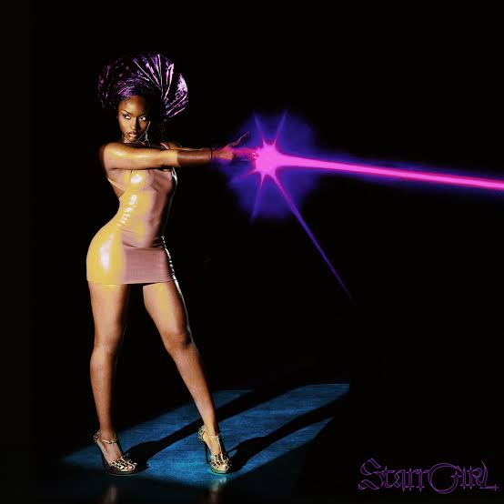
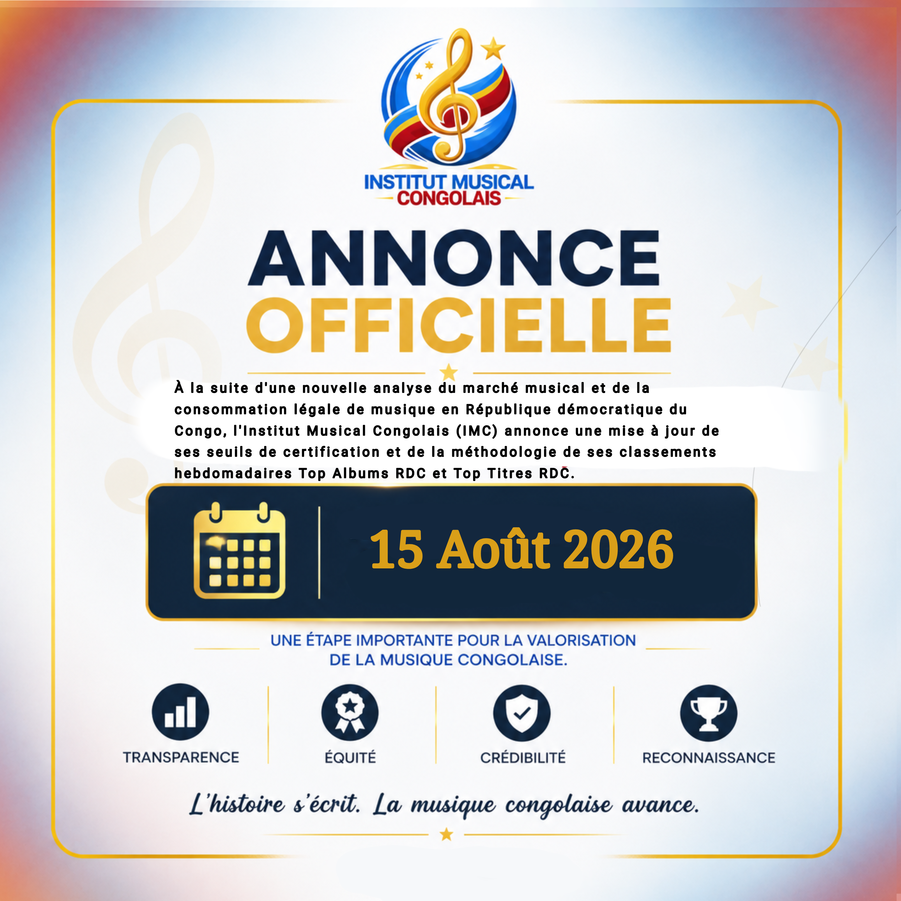

Top Albums RDC de la semaine
| # | - | Pochette | Album | Artiste |
|---|---|---|---|---|
| 1 | ➖ |

|
XX | Fally Ipupa |
| 2 | ⬆ +1 |

|
BĒYĀH | Damso | 3 | ⬆ +6 |

|
M$NEY | Asake |
| 4 | new |
 |
STARRGIRL | Ayra Starr |
| 5 | ⬆ +2 |  |
M.I.L.S 4 | Ninho |
Top Titres RDC de la semaine
| # | - | Pochette | Titre | Artiste |
|---|---|---|---|---|
| 1 | ⬆ +1 | |
LOST | Fally Ipupa |
| 2 | ⬇ -1 |  |
KITAMATA | Fally Ipupa |
| 3 | ➖ | |
PÉPÉLÉ | Fally Ipupa & Guy2BezBar |
| 4 | ⬆ +6 |  |
NDE NA TINGAMO | Transco Léopard |
| 5 | ⬆ +3 |  |
SPIRITS | Pson |

L'IMC met à jour ses seuils de certification et sa méthodologie
15 Août 2026
À la suite d'une nouvelle analyse du marché musical et des habitudes de consommation légale de musique en République Démocratique du Congo, l'Institut Musical Congolais (IMC) annonce une mise à jour...
Voir plusÀ propos de l'IMC
L'Institut Musical Congolais (IMC) est une initiative privée et indépendante dédiée à la mesure et à la certification des performances musicales en RDC.